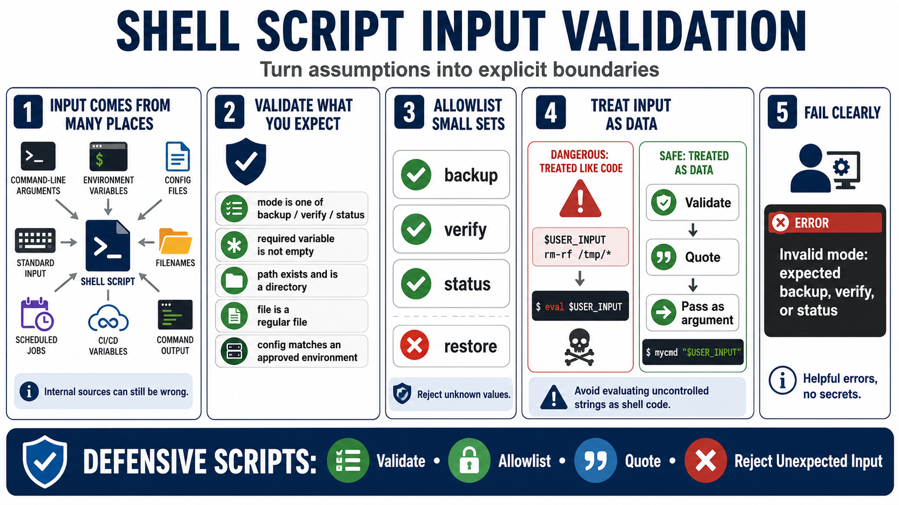

Input Validation and Trust Boundaries
Connecting to LMS... Progress: in progress

Narration
Shell scripts receive input from many places: command-line arguments, environment variables, configuration files, standard input, filenames, scheduled jobs, CI/CD variables, and output from other commands. Defensive scripts do not assume input is valid simply because it came from an internal tool. Internal automation can still pass empty values, stale paths, unexpected filenames, or values meant for a different environment.
Validation should define what the script expects before using the value. A mode might be limited to backup, verify, or status. A required variable should not be empty. A path might need to exist and be a directory. A file might need to be a regular file. A configuration value might need to match a known environment or approved destination. Specific checks are easier to review than broad cleanup.
Allowlisting is often the clearest pattern for small sets of expected values. If a script supports three modes, it should reject the fourth. If it supports a known set of deployment environments, it should fail when the value is misspelled. Clear rejection prevents a surprising value from falling through to a default branch that was never meant for production.
Avoid evaluating user-controlled or uncontrolled strings as shell code. Most normal script input can be handled as data: validate it, quote it, and pass it as an argument. When input is rejected, the error message should tell the operator what was expected without exposing secrets or noisy internal details. Validation turns assumptions into explicit boundaries.